What to Check Before Buying a Game
A practical pre-purchase checklist for gameplay footage, performance, monetization, reviews, and whether a game actually fits your taste.
Players absolutely do read about games before playing, but the best readers are not looking for someone to tell them what to think. They are trying to avoid wasted money, wasted storage, broken ports, manipulative monetization, or a game that is acclaimed but wrong for their taste. A good review should help with that decision.
Some games change dramatically after release. Cyberpunk 2077 is the clearest modern example: the launch reputation was poor, but the current game after major patches and Phantom Liberty is a different proposition. Reviews should say which version they are judging.
Read my Check the Current Version, Not the Launch Reputation review
A game can have excellent gunplay and still be frustrating if progression, cosmetics, or competitive pressure are built around spending. Free-to-play reviews need to assess fairness, grind, and whether paid items affect power.
Difficulty is not automatically good or bad. Elden Ring is brilliant because challenge, exploration, and mastery reinforce each other. But a player who wants a relaxed story game may bounce off it. The question is not 'is it hard?' but 'is the difficulty the point?'
Trailers sell tone. Streamers sell moments. Unedited gameplay shows pacing, UI, travel time, combat rhythm, and how the game actually feels between highlights. For long games especially, that matters more than a montage.
The strongest review format is not simple praise versus criticism. It is fit: who this is for, what it does unusually well, what may annoy you, how much time it asks for, and whether the price makes sense.